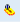

Working in the Element Tree View
The Element Tree view allows you to work with a selected depth and layers to create complex graphics that represent your site or building facility.
Select the topic related to your task:
Delete Elements from the Element Tree
An element can be deleted from the Element Tree, unless it is the last remaining layer in the tree or it, and any of its child elements are locked.
- You have a graphic open in Design or Test mode to which you want to add a layer.
- Expand the Element Tree view.
- Within the view, select and right-click the element you want to delete, and then select Delete.
- The element is deleted from the Element Tree and the active canvas.
Display Elements in the Element Tree
You can select to display all the elements on your graphic in the Element Tree, or you can hide them from view, if you just want to see the layers of your graphics.
- Navigate to the Element Tree view.
- To display elements in the Element Tree view, click Show All Elements
 .
.
- The icon background changes to orange and the elements display in the Element Tree under their associated layers. To hide the elements, click Show All Elements again. The icon background changes back to its default color, and the elements are not visible in the Element Tree.
Select Multiple Layers
You can select several layers at one time using keyboard and mouse functions. Clicking the visible check box of one of the selected layers will make all selected layers visible or invisible.
- You have a graphic with multiple layers open in Design mode.
- Do one of the following:
- Select Several layers by pressing CTRL or using the SHIFT mouse click operations.
- Select All Layers by pressing CTRL+A.
- The selected layer rows are then displayed with a blue background.
You can now apply another command to the selected layers. For example, selecting Delete, or clicking the visible check box of one of the selected layers will make all selected layers visible or invisible.
Use the Hover Mode
- You have a graphic with multiple layers open in Design or Test mode and you wish to see the contents of one layer only.
- Click Hover Mode

. - Hover mode is active and the icon background color changes to orange .
- Move your mouse over the layer you want to view.
- Only the contents associated with that layer are now visible on the canvas.
- To view a particular element of a layer, hover over the targeted element.
- All the elements of that layer are displayed and the selected element is surrounded by a purple rectangle.
- To exit this mode, click the active Hover Mode icon in the Element tree.
- The Hover mode is inactive and no longer highlighted.
Related Topics
For background information, see Configuring Elements.
For workspace overview, see Element Tree View.
For keyboard shortcuts, see Keyboard Shortcuts.